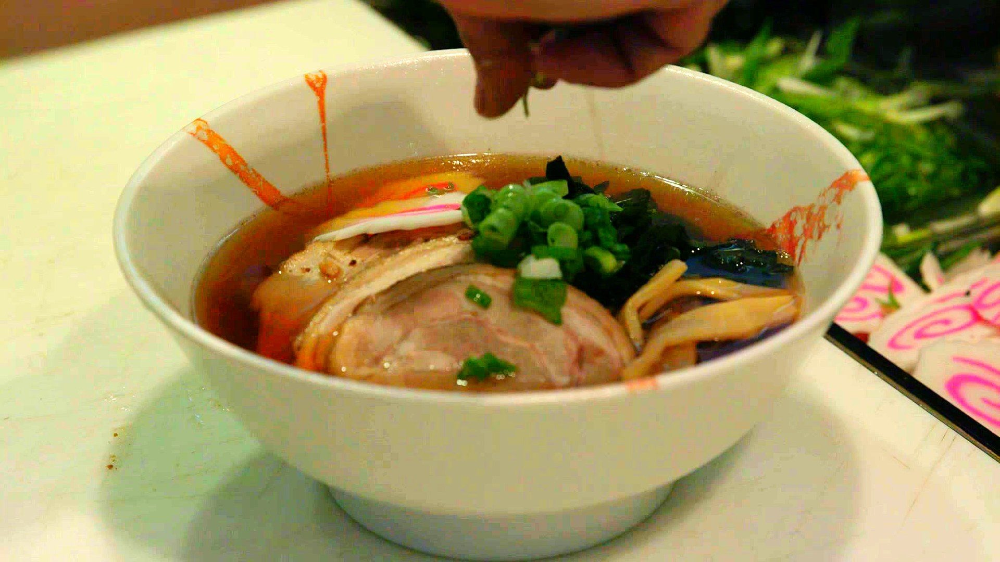
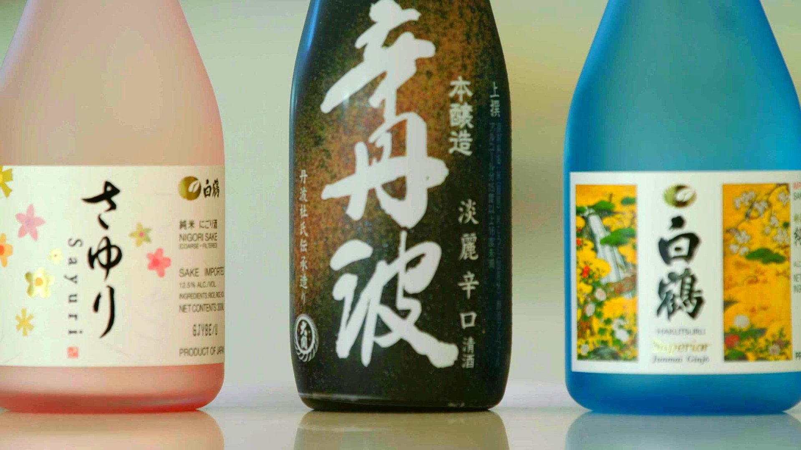

The Menu
Sushi, noodles, rice bowls, bento and more, all made fresh at Terminal 3.
Sushi, noodles, rice bowls, bento and more, all made fresh at Terminal 3.





Menu source: sankaku-menu.pdf (2020). Photos are illustrative and may not show the exact dish.